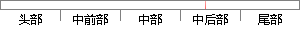

本系统中Controller层处理的只是简单的数据校验以及一些简单的业务逻辑，并不处理系统的核心业务逻辑。
片段位置图

相似结果|
相似片段 1：Controller的一部分，换句话说，它不应该包含过多的业务逻辑，而应该只是简单地收集业务方法所需要的数据并传递给业务对象，本系统中的业务实现在Agent中实现。实际上，它的主要职责是：>校验前提条件或者声明>调用
|
※ 片段修改建议 ※
近似词参考：- 处理：处置 处置惩罚
- 简单：简略 简朴
- 以及：和
- 简单：简略 简朴
- 业务：营业
- 并不：其实不
- 核心：焦点
- 业务：营业
系统自动生成语句：本系统中Controller层处置的只是简略的数据校验和一些简略的营业逻辑，其实不处置系统的焦点营业逻辑。
注：本片段修改建议为系统自动生成，仅供参考。